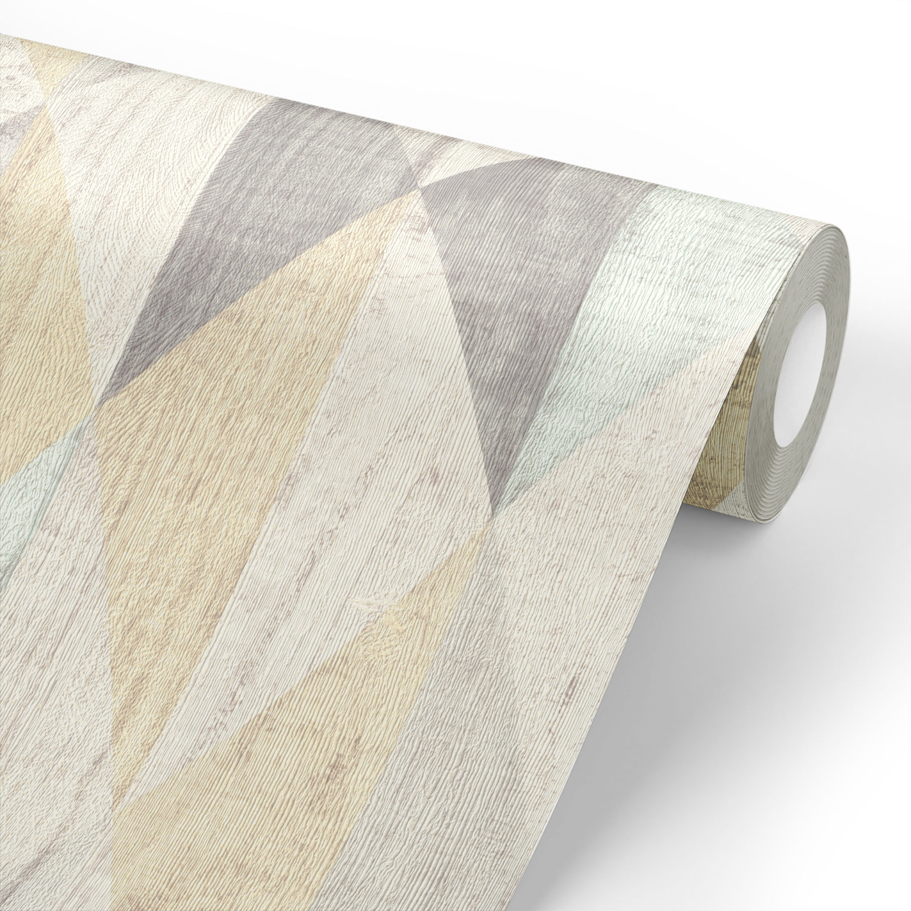

Рассчитать количество рулоновИногда нам бывает необходимо рассчитать количество рулонов обоев для покупки. Можно сделать это вручную, а можно воспользоваться этим онлайн калькулятором, заполнив все необходимые поля за минуту и быстро получив результат.Внимание!Если программа показывает десятичное число рулонов, то округляйте до целого. Например, 7.6 ==> 8Периметр вашего помещения :Площадь вашего помещения:Площадь вашего рулона:Необходимое количество рулонов: